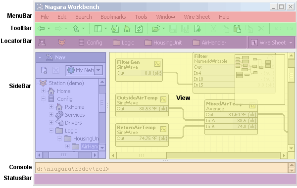

The workbench module defines the framework for building standardized user interfaces. The workbench provides enhancements to the bajaui widget toolkit:
Note: The term workbench applies both to the actual application itself as well as the underlying technology used to build customized applications. As you will see, all apps are really just different veneers of the same workbench customized using WbProfiles.

The illustration aboves shows the key components of the Workbench layout:
The BWbShell
class is used to model the entire workbench window.
The getActiveOrd() method provides access
to the current location, and hyperlink() is used to hyperlink
to a new ord.
The fundamental navigation model of workbench is like a web browser. A web browser always has a current URL. As the current URL is changed, it fetches and displays the contents of that URL. A history of URLs is remembered allowing back and forward navigation. Most web browsers also allow the user to bookmark URLs for quick retrieval.
The workbench follows the same model. Instead of a URL to identity
current location, the workbench uses an ord.
The ord currently being viewed is called the active ord. Every ord
resolves to a BObject. The target of the active ord is
called the active object.
BWbViews
are the plugins used to work with the active object. Views are the primary
content of the workbench and provide a user interface to view or edit
the active object. The workbench discovers the available views by searching
the registry for WbViews registered on the active object.
The workbench provides a ready to use bookmark system that allows users to save and organize ords as bookmarks. Bookmarks are also used to store NavSideBar and FileDialog favorites. The bookmark system provides a public API via the javax.baja.ui.bookmark package.
Workbench also provides tab based browsing similar to modern browsers such as Mozilla and FireFox. Most places in the interface which allow double clicking to hyperlink support Ctrl+double click to open the object in a new tab. Also see the File menu for the menu items and shortcuts used to manipulate and navigate open tabs.
The workbench is fundamentally a command and navigation shell, with all of it's functionality provided by plugins. The plugins available to the workbench are discovered by searching the registry for the appropriate type (WbProfiles allow further customization). This means that installing a new workbench plugin is as simple as dropping in a module.
All plugins subclass BWbPlugin,
which is itself a BWidget. The following common plugins are
discussed in the following sections:
Views are the workhorses of the workbench. Views provide the content viewers and editors for working with the active objects. Views also have the unique ability to do menu and toolbar merging. To implementing a new view plugin follow these rules:
BWbView,
or if your view is on a BComponent, then subclass
BWbComponentView;
doLoadValue(BObject, Context) to update
the user interface with the active object.
setModified()
when the user makes a change which requires a save.
setModified() has been
called, override doSaveValue(BObject, Context) to
save the changes from the user interface back to the active object.
<type name="AlarmConsole" class="com.tridium.alarm.ui.BAlarmConsole">
<agent requiredPermissions="r"><on type="alarm:ConsoleRecipient"/></agent>
</type>
Writing a view for a BIFile typically involved reading the file's
content for display on doLoadValue(), and writing back the
contents on doSaveValue().
Writing a BWbComponentView
for a BComponent typically involves subscribing to the necessary
component or components on doLoadValue(), and saving back changes
on doSaveValue(). The WbComponentView class provides
a series of registerX() methods for managing the view's
subscriptions. Remember that if working with remote components, batching
resolves, subscribes, and transactions can make significant performance
improvements. Refer to Remote Programming
for more information.
Field editors are similar to views, except they typically are smaller
editors used to edit a BSimple or BStruct.
Unlike views, a field editor never fills the view content area, but
rather is used inside views like the PropertySheet.
The rules for building a field editor are very similar to views:
BWbFieldEditor.
doLoadValue(BObject, Context) to update UI from object.
setModified() when the user makes a change.
doSaveValue(BObject, Context) to update the object from the UI.
BWbFieldEditor also provides some convenience methods
for displaying a dialog to input a specific BObject type.
For example to prompt the user input a street address:
BStreetAddress addr = new BStreetAddress();
addr = (BStreetAddress)BWbFieldEditor.dialog(null, "Enter Address", addr);
if (addr != null) { /* do something! */ }
Sidebars are auxiliary tools designed to be used in conjunction with the active view. Sidebars are displayed along the left edge of the view. Multiple sidebars can be open at one time. Unlike views, sidebars are independent of the active ord.
The rules for building a sidebar:
BWbSideBar.
TypeInfo rules:
BookmarkSideBar.displayName=Bookmarks BookmarkSideBar.icon=module://icons/x16/bookmark.png
Tools are plugins to the workbench Tools menu. Tools provide functionality independent of the active ord. Typically tools are dialogs or wizards used to accomplish a task. There are three types of tools:
BWbTool:
is the base class of all tools. It provides a single invoke(BWbShell shell)
callback when the tool is selected from the Tools menu. Often invoke is used to launch
a dialog or wizard.
BWbNavNodeTool:
is a tool which gets mounted into the ord namespace as "tool:{typespec}|slot:/".
Selecting the tool from the Tools menu hyperlinks as the tool's ord and then
standard WbViews are used to interact with the tool. Typically
in this scenario the tool itself is just a dummy component used to register one
or more views.
BWbService:
is the most sophisticated type of tool. Services are WbNavNodeTools,
so selecting them hyperlinks to the tool's ord. Services also provide the
ability to run continuously in the background independent of the active ord.
This is useful for monitoring tools or to run drivers locally inside the
workbench VM. Services can be configured to start, stop, and auto start via
the WbServiceManager.
The rules for building a tool:
BWbTool, BWbNavNodeTool, or BWbService.
TypeInfo rules:
NewModuleTool.displayName=New Module NewModuleTool.icon=module://icons/x16/newModule.png
The BWbProfile
class provides the ability to create new customized versions of the workbench.
WbProfile provides hooks to replace all of the standard layout components
such as the MenuBar, ToolBar, LocatorBar, and StatusBar. Plus it provides
the ability to customize which views, sidebars, and tools are available.
Using WbProfiles you can quickly create custom applications that provide
just the functionality needed for your domain.
You can launch workbench with a specific profile via a command parameter:
wb -profile:{typespec}.
Note that if you wish to create an application that runs in the web browser
you will need to subclass BWbWebProfile.